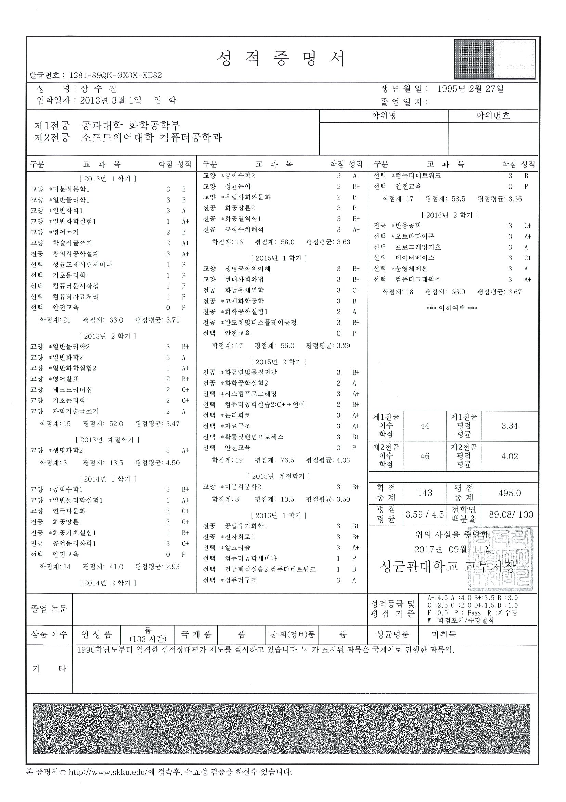

<div class="resume-section-content">
    <h2>Education</h2>
    <div style="width:40%; float:right; margin-top:50px">
        <a href="../assets/img/gpa.png" target="_blank">
            
        </a>
    </div>
    <h3>대 학 교</h3>
    <div class="about-container">
        <div>
            <h4>화학공학 학사</h4>
            성균관대학교 공학사<br>
            공과대학 - 화학공학부
        </div>
        <div class="date">2013.03 입학 - 2018.02 졸업</div>
    </div>
    <div class="about-container">
        <div>
            <h4>컴퓨터공학 학사</h4>
            성균관대학교 공학사<br>
            소프트웨어대학 컴퓨터공학과
        </div>
        <div class="date">2013.03 입학 - 2018.02 졸업</div>
    </div>
    <h3>고 등 학 교</h3>
    <div class="about-container">
        <div>
            연수여자고등학교<br>
            인문계 이과계열 졸업
        </div>
        <div class="date">2010.03 입학 - 2013.02 졸업</div>
    </div>
</div>
<div style="margin-top:1.5em; float:right;">
    <a href="{{ base.url }}/about/2"><i class="fa" aria-hidden="true">다음 </i><i class="fa fa-arrow-right" aria-hidden="true"></i></a>
</div>